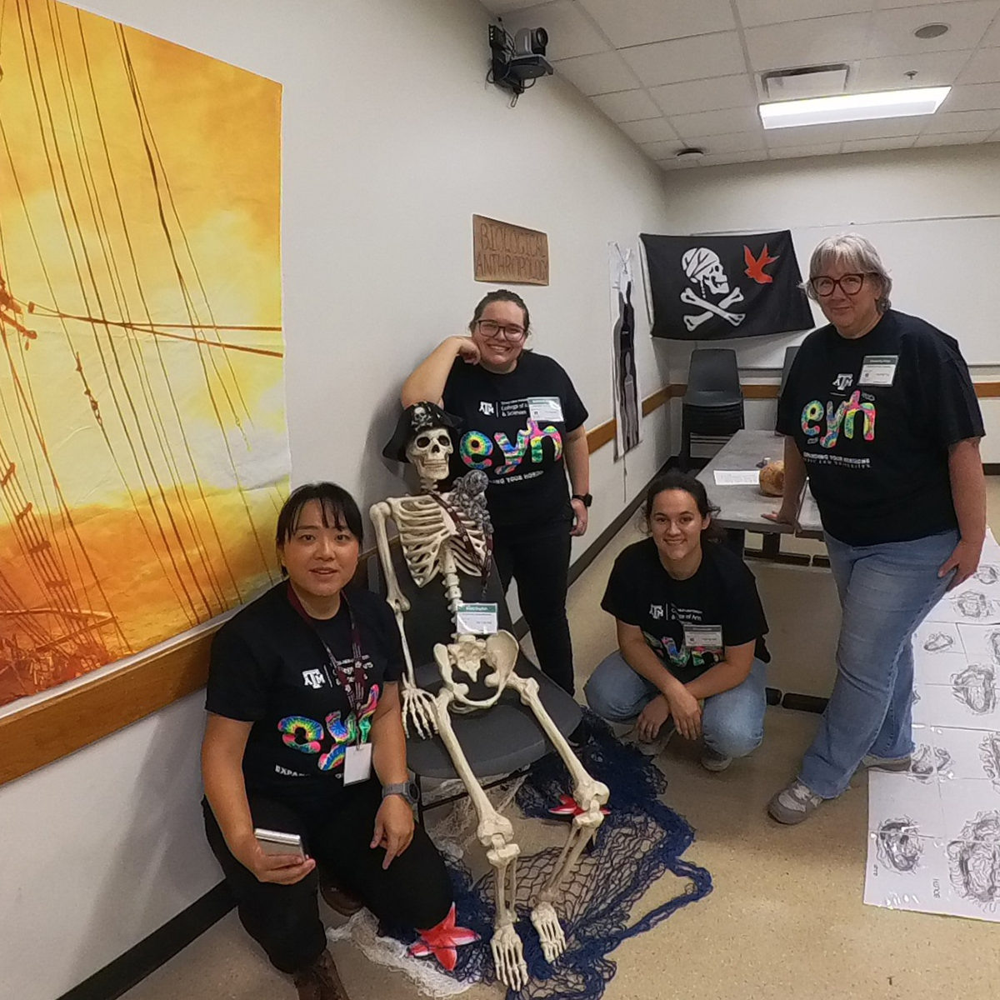
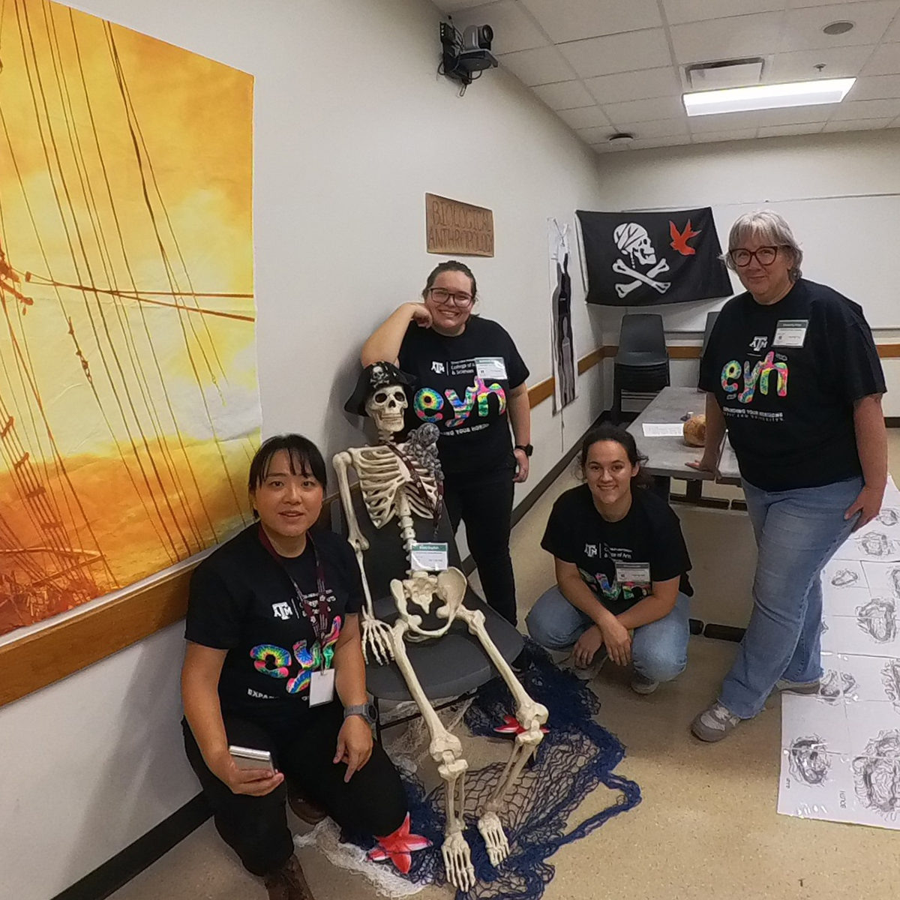

Maritime Archaeologist, Underwater Cultural Heritage Manager, Diver and Ocean Lover.

I am an underwater archaeologist from Taiwan, currently pursuing my PhD at Texas A&M University. I have extensive experience in underwater survey and excavation and look forward to collaborating on diverse projects in the future.
My current research focuses on early 20th-century Chinese seagoing ship models in Western museums through digital documentation to understand their collection history and enhance research accessibility. By comparing these models with historical records and archaeological evidence, I aim to advance understanding of Chinese shipbuilding traditions, as well as how Western nautical scholars and institutions have documented these Asian ship construction techniques, bridging not just different regions but also museum collections with archaeological research.
Specializations: Underwater Archaeology, Maritime Cultural Heritage Management, Archival Research and Historical Archaeology, Nautical Archaeology and Archaeological Tourism.
Current Research Highlights
 



Recent Field Projects